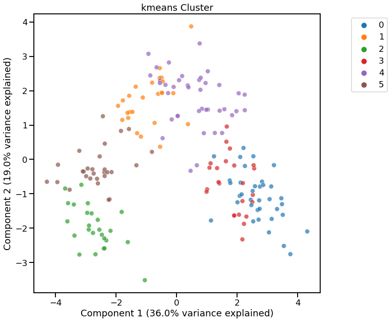
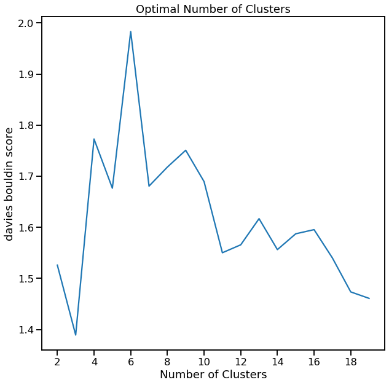

Cluster Analysis¶
[1]:
import data_describe as dd
Load dataset from scikit-learn¶
[2]:
from sklearn.datasets import load_wine
import pandas as pd
df = load_wine(as_frame=True).data
target = load_wine().target # For supervised clustering
Cluster Defaults¶
[3]:
c = dd.cluster(df)
[4]:
c.show()
[4]:
<AxesSubplot:title={'center':'kmeans Cluster'}, xlabel='Component 1 (36.0% variance explained)', ylabel='Component 2 (19.0% variance explained)'>

Using Plotly¶
[5]:
dd.cluster(df, target=target, viz_backend="plotly")
C:\workspace\data-describe\data_describe\compat\_notebook.py:32: JupyterPlotlyWarning:
Are you running in Jupyter Lab? The extension "jupyterlab-plotly" was not found and is required for Plotly visualizations in Jupyter Lab.
None
[5]:
Cluster Widget using kmeans
Show Cluster Search for K-Means¶
[6]:
cl = dd.cluster(df, target=target)
cl.cluster_search_plot()
C:\Users\David\.conda\envs\test-env\lib\site-packages\seaborn\_decorators.py:43: FutureWarning:
Pass the following variables as keyword args: x, y. From version 0.12, the only valid positional argument will be `data`, and passing other arguments without an explicit keyword will result in an error or misinterpretation.
[6]:
<AxesSubplot:title={'center':'Optimal Number of Clusters'}, xlabel='Number of Clusters', ylabel='silhouette score'>

Visualize using t-SNE for Dimensionality Reduction¶
[7]:
dd.cluster(df, target=target, dim_method="tsne")
<AxesSubplot:title={'center':'kmeans Cluster'}, xlabel='Dimension 1', ylabel='Dimension 2'>
[7]:
Cluster Widget using kmeans

Return Reduced Data with Cluster Labels¶
[8]:
cl.viz_data.head()
[8]:
| x | y | clusters | |
|---|---|---|---|
| 0 | 3.316751 | -1.443463 | 0 |
| 1 | 2.209465 | 0.333393 | 0 |
| 2 | 2.516740 | -1.031151 | 0 |
| 3 | 3.757066 | -2.756372 | 0 |
| 4 | 1.008908 | -0.869831 | 0 |
Return Cluster Labels Only¶
[9]:
cl.clusters
[9]:
array([0, 0, 0, 0, 0, 0, 0, 0, 0, 0, 0, 0, 0, 0, 0, 0, 0, 0, 0, 0, 0, 0,
0, 0, 0, 0, 0, 0, 0, 0, 0, 0, 0, 0, 0, 0, 0, 0, 0, 0, 0, 0, 0, 0,
0, 0, 0, 0, 0, 0, 0, 0, 0, 0, 0, 0, 0, 0, 0, 1, 1, 2, 1, 1, 1, 1,
1, 1, 1, 1, 1, 1, 1, 0, 1, 1, 1, 1, 1, 1, 1, 1, 1, 2, 1, 1, 1, 1,
1, 1, 1, 1, 1, 1, 1, 0, 1, 1, 1, 1, 1, 1, 1, 1, 1, 1, 1, 1, 1, 1,
1, 1, 1, 1, 1, 1, 1, 1, 2, 1, 1, 0, 1, 1, 1, 1, 1, 1, 1, 1, 2, 2,
2, 2, 2, 2, 2, 2, 2, 2, 2, 2, 2, 2, 2, 2, 2, 2, 2, 2, 2, 2, 2, 2,
2, 2, 2, 2, 2, 2, 2, 2, 2, 2, 2, 2, 2, 2, 2, 2, 2, 2, 2, 2, 2, 2,
2, 2])
KMeans - Specifying number of clusters¶
[10]:
dd.cluster(df, n_clusters=4)
<AxesSubplot:title={'center':'kmeans Cluster'}, xlabel='Component 1 (36.0% variance explained)', ylabel='Component 2 (19.0% variance explained)'>
[10]:
Cluster Widget using kmeans

KMeans - Using Davies-Bouldin for finding optimal n_clusters¶
[11]:
cl = dd.cluster(df, target=target, metric='davies_bouldin_score')
cl
<AxesSubplot:title={'center':'kmeans Cluster'}, xlabel='Component 1 (36.0% variance explained)', ylabel='Component 2 (19.0% variance explained)'>
[11]:
Cluster Widget using kmeans

[12]:
cl.cluster_search_plot()
C:\Users\David\.conda\envs\test-env\lib\site-packages\seaborn\_decorators.py:43: FutureWarning:
Pass the following variables as keyword args: x, y. From version 0.12, the only valid positional argument will be `data`, and passing other arguments without an explicit keyword will result in an error or misinterpretation.
[12]:
<AxesSubplot:title={'center':'Optimal Number of Clusters'}, xlabel='Number of Clusters', ylabel='davies bouldin score'>

HDBSCAN¶
[13]:
dd.cluster(df, method="hdbscan", viz_backend="plotly")
None
[13]:
Cluster Widget using hdbscan